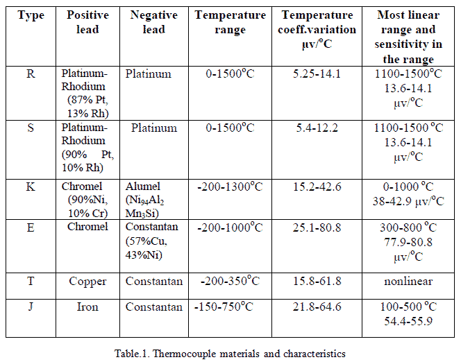
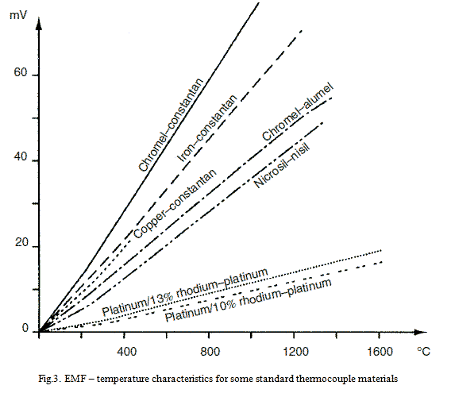
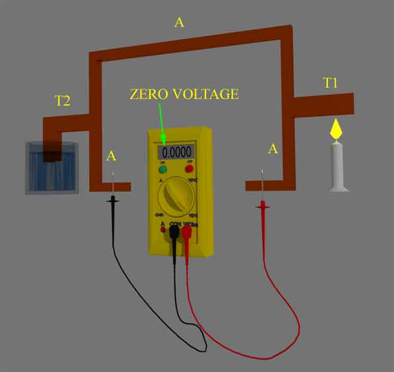
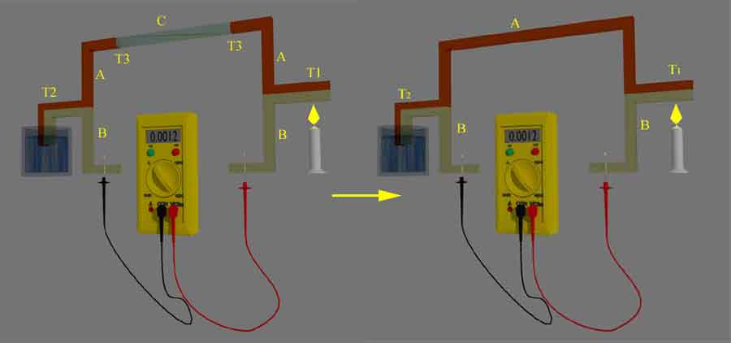
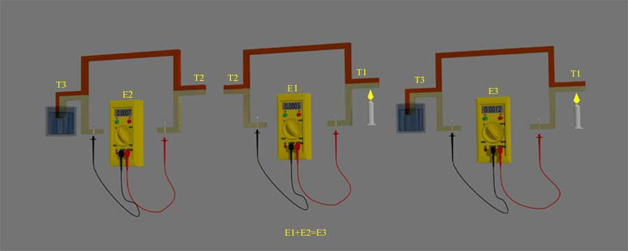

The thermocouple is widely used temperature sensor in industry. Whenever two different types of metals are connected together, a thermoelectric potential (sometimes called thermoelectric EMF) is generated across the two free ends the metals according to the temperature of the joint. This is known as the thermoelectric effect. Such thermoelectric potentials are only a few milli-volts in magnitude and so the effect is only significant when typical voltage output signals of a measurement system are of a similar low magnitude.
This thermoelectric effect was discovered by Thomas Johan Seeback discovered in 1821. This thermoelectric EMF is generated due to the combination of Peltier effect and Thomson effect. The EMF generated can be approximately expressed by the relationship:
The values of constants a1, a2, a3, etc. depend on the metals A and B as shown in fig.1.
In this fig.1, T1 and T2 are the temperatures which are presented in the junction points of metal A and B. T1 is represented as hot junction and T2 is represented as clod junction. So, the T1 should be greater than the T2. Now, T1 – T2 = T. This is nothing but the temperature difference of two temperatures. In thermocouple circuit, a thermoelectric potential is generated across the two free ends that is the function of junction temperature. This is done by Seeback effect.
Fig.1. A Typical Thermocouple
In thermocouple temperature sensor, the temperature of hot junction is measured in respect of cold junction of vise varsa. The thermoelectric potential is generated in a thermocouple instrument is in range of μV. Hence, the voltmeter connected to measure the thermoelectric potential is extremely sensitive and the temperature can be read directly from this voltmeter, if it is calibrated properly in the scale of temperature.
Thermocouples are a very important class of device as they provide the most commonly used method of measuring temperatures in industry. The major reasons behind popularity of thermocouple temperature measurement are;
- They are very strong and readings are uniform,
- They can measure wide range of temperatures,
- Their characteristics are almost linear with a accuracy of ±0.05%.
Thermocouple Materials
Thermocouples are manufactured from various combinations of the base metals copper and iron, the base-metal alloys of Alumel (Ni/Mn/Al/Si), Chromel (Ni/Cr), Constantan (Cu/Ni), Nicrosil (Ni/Cr/Si) and Nisil (Ni/Si/Mn), the noble metals platinum and tungsten, and the noble-metal alloys of platinum/rhodium and tungsten/rhenium.
Only certain combinations of these are used as thermocouples and each standard combination is known by an internationally recognized type letter, for instance type K is Chromel–Alumel. The below table is shown the some of the material types and their characteristics. The EMF–temperature characteristics for some of these standard thermocouples are shown in Fig.3. These curves show reasonable linearity over at least part of their temperature-measuring ranges.


Laws of Thermocouple
The Peltier and Thomson effects explain the basic thermoelectric principle. But, this is not sufficient to provide a better technique to measure the voltage during the measuring situations. For this purpose, we have three different laws of thermoelectric circuits to provide useful tips to measure the temperature. These laws are known as, law of homogeneous circuit, law of intermediate metals and law of intermediate temperatures.
The first law, homogeneous circuit, states that in a circuit composed of a single homogeneous metal, cannot generate an electric potential by the application of even sufficient temperature difference between two different points of the circuit.

The second law is also known as thermocouple law of intermediate metals, states that the net EMF in a circuit consisting of interconnections of a number of unlike metals, maintained at the same temperature, is zero. That means, if other metal conductors are inserted in the thermocouple circuit and the junctions of these interconnected metal conductors are in same temperature, then output emf will not be affected and remains same as it was made of only two metals. The practical implication of this principle is that lead wires may be attached to the thermocouple without affecting the accuracy of the measured EMF, provided that the newly formed junctions are at the same temperature.

The third law, successive or intermediate temperatures, where EMF E1 is generated when two dissimilar metals have junctions at temperatures T1 and T2 and EMF E2 results for temperatures T2 and T3. It follows that an EMF E1 and E2 results at output terminals when the junctions are at temperatures T1 and T3. This principle makes it possible for calibration curves derived for a given reference junction temperature to be used to determine the calibration curves for another reference temperature.

 by
by